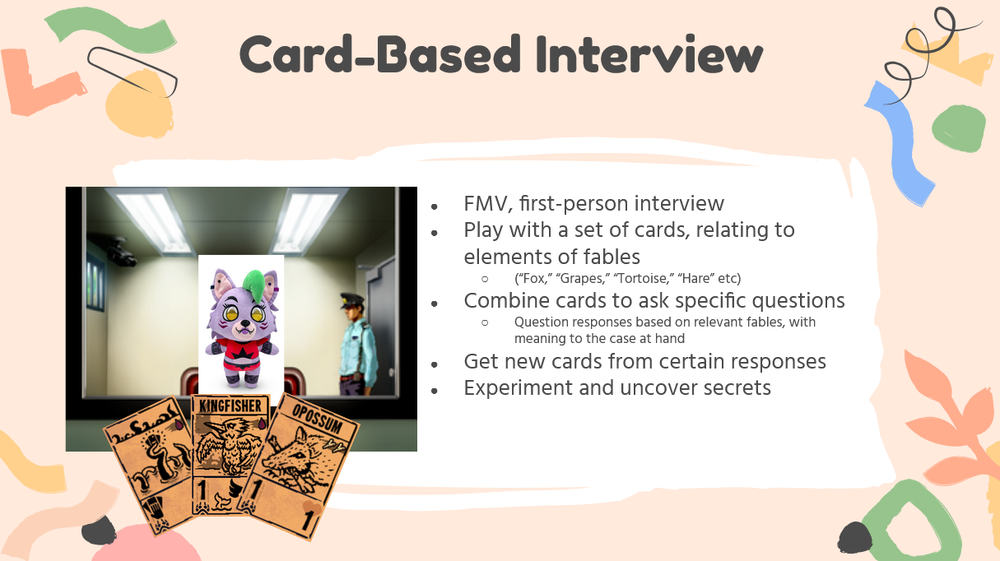
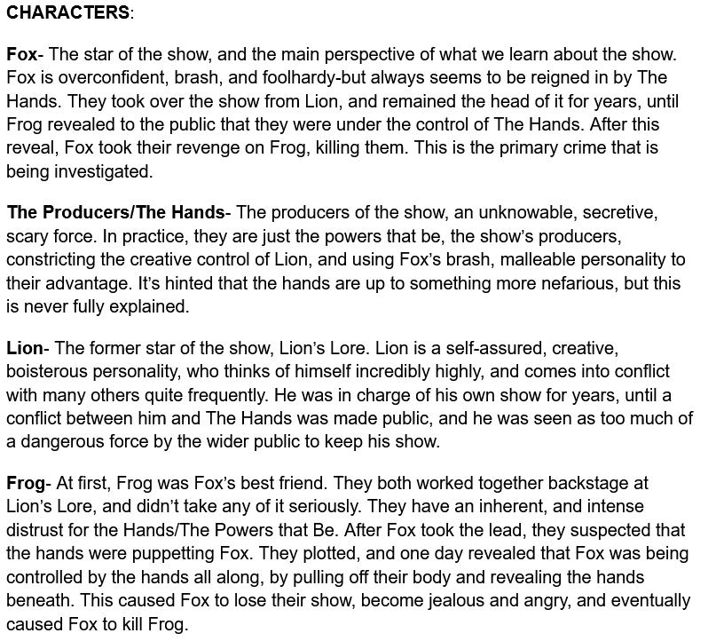
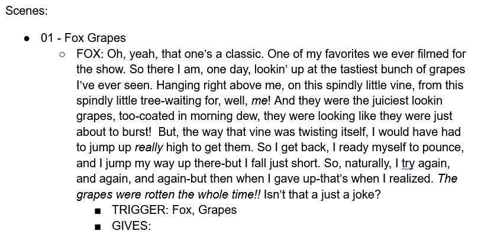
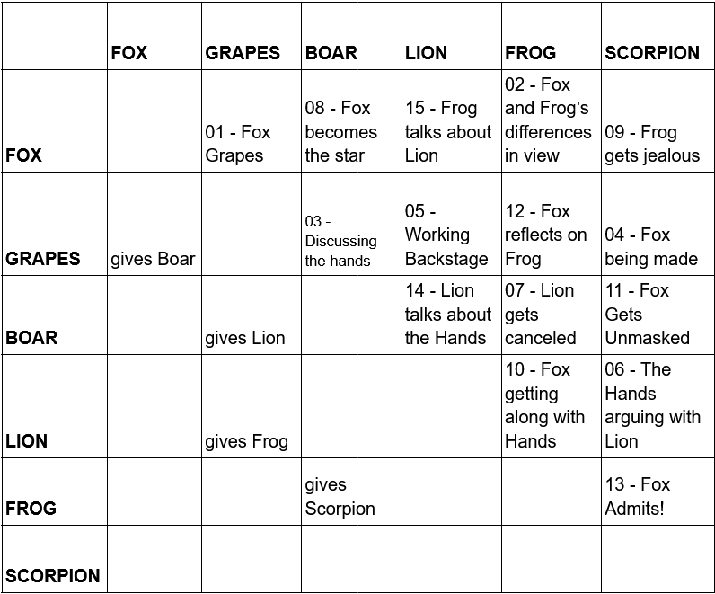

Fox Fables started with a simple image: a puppet smoking a cigarette. From this moment, I created everything else surrounding the game.
I started the process by coming up with a series of premises. The first idea was to theme it as a children's show, and have the player take the role of a child fan of the show turned investigative reporter, who would interview the puppet and slowly learn the dark truth of what was going on.
I liked the idea of using fables as the baseline inspiration for the segments in the game. As foxes are a frequent character featured in
After presenting this idea to some friends, they asked me, "Why are you planning on targeting this game towards kids?" This question broke down the intentions behind this game, and made me realize I had a great opportunity: I could tell a story about adults, for adults, with the aesthetics of a kid's puppet show. I first outlined the characters, and the overarching story between them, to reflect this.
The premise became investigating the star of a now-cancelled, long running TV show about fables. I put in themes of fame, the balance of creative minds and the producers that hold them back, and stories inspired by Aesop's fables, to reflect the medium of puppets, the hands that control them, and the real-life implications of those same fables.
  